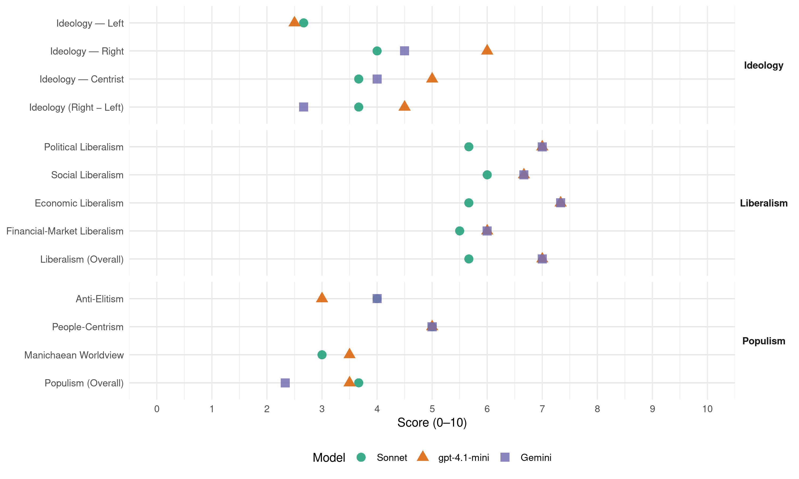

NPA (Australia, 2013)
manifesto_id 63810_201309
Get full text: This site shows derived annotations and short verbatim quotes only. The full manifesto text is © Manifesto Project / WZB — obtain it via manifesto-project.wzb.eu using the manifesto_id above.
Headline scores
| Dimension | Sonnet | gpt-4.1-mini | Gemini |
|---|---|---|---|
| Populism (Overall) | 3.7 | 3.5 | 2.3 |
| Anti-Elitism | 4.0 | 3.0 | 4.0 |
| People-Centrism | 5.0 | 5.0 | 5.0 |
| Manichaean Worldview | 3.0 | 3.5 | – |
| Ideology (Right − Left) | 3.7 | 4.5 | 2.7 |
| Liberalism (Overall) | 5.7 | 7.0 | 7.0 |
| Political Liberalism | 5.7 | 7.0 | 7.0 |
| Social Liberalism | 6.0 | 6.7 | 6.7 |
| Economic Liberalism | 5.7 | 7.3 | 7.3 |
| Financial-Market Liberalism | 5.5 | 6.0 | 6.0 |
Evidence per dimension
Economic Liberalism
Gemini · score 8.0 · verified · chunk 1
“private enterprise is the foundation of the”
not invested in productive economic infrastructure. Our core belief is that private enterprise is the foundation of the nation’s economy, based on a fair and
Gemini · score 7.0 · verified · chunk 2
“healthy competition is good, but small businesses must be protected”
small business can compete on a level playing field with bigger businesses. Healthy competition is good, but small businesses must be protected from unfair competition by powerful resource-rich companies.
Gemini · score 7.0 · verified · chunk 3
“encourage small business andtourism”
participation of women in the paid workforce, by: Implementing programs that encourage small business andtourism; Encouraging more women
gpt-4.1-mini · score 8.0 · verified · chunk 1
“Strong economic management means lower taxes and downward pressure on interest rates”
The Nationals’ highest priority is to rebuild a strong economy, restore confidence and usher in a new era of growth, prosperity and opportunity in Australia’s regions. Strong economic management means lower taxes and downward pressure on interest rates.
gpt-4.1-mini · score 7.0 · verified · chunk 2
“The Nationals commit to reinvigorating previous programs to remove red tape”
The vast number of interlocking and confusing regulations covering business activity at the federal, state and local levels must be simplified. The Nationals commit to reinvigorating previous programs to remove red tape at all levels of government.
gpt-4.1-mini · score 7.0 · verified · chunk 3
“small business and tourism; Encouraging more women to take up apprenticeships”
The Nationals in government will aim for the full and equal participation of women in the paid workforce, by: Implementing programs that encourage small business andtourism; Encouraging more women to take up apprenticeships, traineeshipsand to undertake tertiary studies; Providing special training programs for Indigenous women; Supporting education programs and initiatives which give womenaccess to either face to-face training, or externally provided trainingusing the technological services now available; Further enhancing paid maternity, paternity and parental leave,including for the self employed; Providing more childcare places, with priority given to the needs ofregional families; Working towards pay equality for equal work between women andmen; and Ensuring that defence remains a major employer in areas outside the major centres.
Sonnet · score 6.0 · verified · chunk 1
“Lower taxes, reduced spending and downward pressure”
Lower taxes, reduced spending and downward pressure on interest rates are in The Nationals’ DNA – priorities that come about for all the right reasons
Sonnet · score 6.0 · verified · chunk 2
“remove red tape at all levels of government”
The Nationals commit to reinvigorating previous programs to remove red tape at all levels of government This includes combating the indirect red tape that results from restrictions imposed by governments
Sonnet · score 5.0 · verified · chunk 3
“Implementing programs that encourage small business”
by: Implementing programs that encourage small business and tourism; Encouraging more women to take up apprenticeships
Financial-Market Liberalism
Gemini · score 7.0 · verified · chunk 1
“increase competition in the banking sector through”
borrowers wishing to switch lenders. We will also increase competition in the banking sector through mutual financial institutions.
Gemini · score 5.0 · verified · chunk 2
“foreign investment in Australian agriculture has been, and will remain, vital”
Foreign ownership – agricultural land, water and food processing Foreign investment in Australian agriculture has been, and will remain, vital for growth, capital, innovation and the development of new
gpt-4.1-mini · score 6.0 · verified · chunk 1
“The Nationals in government will ensure that the recommendations from the Senate Economics References Committee inquiry into the post-GFC banking sector are fully evaluated”
The Nationals in government will ensure that the recommendations from the Senate Economics References Committee inquiry into the post-GFC banking sector are fully evaluated with the aim of having them adopted. This will include an additional Nationals’ recommendation that the Australian Bankers Association consider an industry standard, whereby its members are required to act in the best interests of the client generally and capping penalty (default) interest rates at no more than 50% higher than the interest rate of the loan.
Sonnet · score 6.0 · verified · chunk 1
“increase competition in the banking sector”
We will also increase competition in the banking sector through mutual financial institutions
Sonnet · score 5.0 · verified · chunk 2
“farm debt recovery by banks and other lenders”
We recognise that farm debt recovery by banks and other lenders is increasing at an alarming rate, and note the extremely traumatic experience for farming families
Political Liberalism
Gemini · score 8.0 · verified · chunk 1
“ensure that the recommendations from the Senate”
Small Business Action Plan. The Australian Securities and Investments Commission (ASIC) will be required to review the Corporations Act 2001 and related industry codes, so that liquidators are prevented from taking day-to-day management of a family-owned farm where a financial institution forecloses on that property. The Nationals in government will ensure that the recommendations from the Senate Economics References Committee inquiry into the post-GFC banking sector are fully evaluated with the aim of having them adopted.
Gemini · score 8.0 · verified · chunk 2
“having better checks and balances in place”
assessments of the national interest in relation to farm and agribusiness acquisitions. Having better checks and balances in place does not threaten foreign investment in agriculture In fact, there
Gemini · score 5.0 · verified · chunk 3
“transfer of powers of the Murray-Darling Basin to the federal government”
support a referendum advocating the transfer of powers of the Murray-Darling Basin to the federal government. Coal seam gas
gpt-4.1-mini · score 7.0 · verified · chunk 1
“The Nationals support the retention of the 30%, 35% and 40% private health insurance rebates”
The Nationals support the retention of the 30%, 35% and 40% private health insurance rebates. Labors means-testing of the private health insurance rebates is extremely short-sighted, especially for regional communities.
gpt-4.1-mini · score 7.0 · verified · chunk 2
“The Nationals support the constitutional recognition of local government”
Good local government is the key to sound regional leadership The Nationals support the constitutional recognition of local government to ensure that the federal government is able to continue to make direct payments to local government through regional programs such as Roads to Recovery.
gpt-4.1-mini · score 7.0 · verified · chunk 3
“health concerns are the top item on the political agenda”
Health is a major factor in our lives and disease does not discriminate by gender, culture, religion, age or postcode Not surprisingly, health concerns are the top item on the political agenda for individuals and families. The correlation is well known between lower income levels and poorer health outcomes, and that regional Australia contains a disproportional share of electorates with lower average incomes.
Sonnet · score 6.0 · verified · chunk 1
“SELF-DETERMINATION, SAFETY, CHECKS-AND-BALANCES”
Defence and Border Protection– SELF-DETERMINATION, SAFETY, CHECKS-AND-BALANCES The federal government must assure the defence and security of this nation
Sonnet · score 6.0 · verified · chunk 2
“oppose any attempt to introduce a statutory or constitutional charter”
The Nationals oppose any attempt to introduce a statutory or constitutional charter of human rights.
Sonnet · score 5.0 · verified · chunk 3
“independent panel of legal experts”
We will appoint an independent panel of legal experts to formulate specific amendments to the Water Act
Liberalism (Overall)
Gemini · score 8.0 · verified · chunk 1
“private enterprise is the foundation of the”
not invested in productive economic infrastructure. Our core belief is that private enterprise is the foundation of the nation’s economy, based on a fair and
Gemini · score 6.0 · verified · chunk 2
“having better checks and balances in place”
assessments of the national interest in relation to farm and agribusiness acquisitions. Having better checks and balances in place does not threaten foreign investment in agriculture In fact, there
Gemini · score 7.0 · verified · chunk 3
“encourage small business andtourism”
participation of women in the paid workforce, by: Implementing programs that encourage small business andtourism; Encouraging more women
gpt-4.1-mini · score 7.0 · verified · chunk 1
“Strong economic management means lower taxes and downward pressure on interest rates”
The Nationals’ highest priority is to rebuild a strong economy, restore confidence and usher in a new era of growth, prosperity and opportunity in Australia’s regions. Strong economic management means lower taxes and downward pressure on interest rates.
gpt-4.1-mini · score 7.0 · verified · chunk 2
“The Nationals commit to reinvigorating previous programs to remove red tape”
The vast number of interlocking and confusing regulations covering business activity at the federal, state and local levels must be simplified. The Nationals commit to reinvigorating previous programs to remove red tape at all levels of government.
gpt-4.1-mini · score 7.0 · verified · chunk 3
“health concerns are the top item on the political agenda”
Health is a major factor in our lives and disease does not discriminate by gender, culture, religion, age or postcode Not surprisingly, health concerns are the top item on the political agenda for individuals and families. The correlation is well known between lower income levels and poorer health outcomes, and that regional Australia contains a disproportional share of electorates with lower average incomes.
Sonnet · score 6.0 · verified · chunk 1
“private enterprise is the foundation of the nation’s economy”
Our core belief is that private enterprise is the foundation of the nation’s economy, based on a fair and equitable taxation system that guards against disadvantage
Sonnet · score 6.0 · verified · chunk 2
“bring down the regulatory barriers that discourage private enterprise”
We will bring down the regulatory barriers that discourage private enterprise from entering the communications market, to provide parity of service and price to regional Australians.
Sonnet · score 5.0 · verified · chunk 3
“forced marriages should be illegal in Australia”
We believe that forced marriages should be illegal in Australia and will support legislation to ban them.
Anti-Elitism
Gemini · score 4.0 · verified · chunk 1
“Labor’s disgraceful abandonment of sound science-based”
and export industries. Labor’s disgraceful abandonment of sound science-based quarantine and biosecurity safeguards and reduced resourcing
Gemini · score 4.0 · verified · chunk 2
“This lack of understanding in the cities, where policies are developed, results in unrealistic policies”
held by urban dwellers of regional life. This lack of understanding in the cities, where policies are developed, results in unrealistic policies, particularly on environmental matters, which are then imposed
Gemini · score 4.0 · verified · chunk 3
“unlike Labor’s centralistic view”
support regional growth and food security, unlike Labor’s centralistic view. We will provide the financial incentives
gpt-4.1-mini · score 3.0 · verified · chunk 1
“Labor’s disgraceful abandonment of sound science-based quarantine”
Labor’s disgraceful abandonment of sound science-based quarantine and biosecurity safeguards and reduced resourcing is alarming This neglect is reflected in Labor’s approach to securing our borders against illicit drugs, illegal fishing crews and people smuggling.
gpt-4.1-mini · score 3.0 · verified · chunk 2
“Labor’s cuts to agricultural research spending”
The alarming decline in agricultural research and development sees Australia being outstripped dollar-for-dollar by many developing countries. Meanwhile, federal Labor’s cuts to agricultural research spending, eliminating the majority of Cooperative Research Centres and the abolition of Land and Water Australia, have been extremely shortsighted.
Sonnet · score 5.0 · verified · chunk 1
“Labor’s disgraceful abandonment of sound science-based quarantine”
Regional Australians know that our singular pest and disease-free status is crucial… Labor’s disgraceful abandonment of sound science-based quarantine and biosecurity safeguards and reduced resourcing is alarming
Sonnet · score 4.0 · verified · chunk 2
“Labor provided research and development funds for agriculture in other countries”
federal Labor’s cuts to agricultural research spending… Over the same period, Labor provided research and development funds for agriculture in other countries to the tune of $464 million
Sonnet · score 3.0 · verified · chunk 3
“Labor’s centralistic view”
unlike Labor’s centralistic view. We will provide the financial incentives for young people
Ideology — Centrist
Gemini · score 4.0 · verified · chunk 3
“unlike Labor’s centralistic view”
support regional growth and food security, unlike Labor’s centralistic view. We will provide the financial incentives
gpt-4.1-mini · score 5.0 · verified · chunk 1
“The Nationals, therefore, support the retention of existing defence facilities in regional areas”
For example, the effective location of defence facilities across regional Australia is vital to any comprehensive defence strategy, both for the nation and for its regional development The timely deployment of personnel and resources to military hot spots – globally, in our region and domestically – also requires a significant presence in regional Australia. The Nationals, therefore, support the retention of existing defence facilities in regional areas.
gpt-4.1-mini · score 5.0 · verified · chunk 2
“Australians must be more than self-sufficient in food”
The Nationals assert that Australians must be more than self-sufficient in food, we have the capacity to make a valuable contribution to feeding the world’s rapidly expanding population.
Sonnet · score 3.0 · verified · chunk 1
“Only The Nationals provide the vision and leadership”
Only The Nationals provide the vision and leadership to bring quality education to regional Australia
Sonnet · score 4.0 · verified · chunk 2
“fair share of the revenue it creates”
The Nationals assert and expect that with much of Australia’s real wealth generated in the regions it is only fitting that a fairer share of the revenue it creates is returned to the regions
Sonnet · score 4.0 · verified · chunk 3
“local communities the power to determine”
Allow local communities the power to determine how water is recovered and how environmental water is delivered
Ideology — Left
gpt-4.1-mini · score 2.0 · verified · chunk 1
“Labor has been incapable of doing this The Nationals are committed to returning the Federal Budget to a real surplus”
The Nationals have continually called on Labor to outline a credible plan to repay debt, which is mounting to the tune of $100 million each and every day However, Labor has been incapable of doing this The Nationals are committed to returning the Federal Budget to a real surplus and beginning to repay the mammoth debt accumulated by Labor.
gpt-4.1-mini · score 3.0 · verified · chunk 2
“Labor’s cuts to agricultural research spending”
Meanwhile, federal Labor’s cuts to agricultural research spending, eliminating the majority of Cooperative Research Centres and the abolition of Land and Water Australia, have been extremely shortsighted.
Sonnet · score 2.0 · verified · chunk 1
“private enterprise is the foundation of the nation’s economy”
Our core belief is that private enterprise is the foundation of the nation’s economy, based on a fair and equitable taxation system
Sonnet · score 3.0 · verified · chunk 2
“strengthen the Competition and Consumer Act”
we will take steps to strengthen the Competition and Consumer Act 2010, and related regulations, to increase the bargaining position of dairy farmers
Sonnet · score 3.0 · verified · chunk 3
“Working towards pay equality for equal work”
Working towards pay equality for equal work between women and men; and Ensuring that defence remains
Ideology (Right − Left)
Gemini · score 3.0 · verified · chunk 1
“deter illegal immigration in the future”
arrivals and deter illegal immigration in the future. We will ensure that Navy and Customs personnel
Gemini · score 3.0 · verified · chunk 2
“too much foreign control over production and supply chains”
vital for growth, capital, innovation and the development of new agricultural regions. Yet, too much foreign control over production and supply chains could have dramatic impacts on resources, markets, supply
Gemini · score 2.0 · verified · chunk 3
“unlike Labor’s centralistic view”
support regional growth and food security, unlike Labor’s centralistic view. We will provide the financial incentives
gpt-4.1-mini · score 4.0 · verified · chunk 1
“Labor’s disgraceful abandonment of sound science-based quarantine”
Labor’s disgraceful abandonment of sound science-based quarantine and biosecurity safeguards and reduced resourcing is alarming This neglect is reflected in Labor’s approach to securing our borders against illicit drugs, illegal fishing crews and people smuggling.
gpt-4.1-mini · score 5.0 · verified · chunk 2
“Foreign ownership should be more transparent”
The paper argues that foreign ownership should be more transparent, proposing that more purchases be scrutinised by the FIRB to ensure they are in the national interest.
Sonnet · score 4.0 · verified · chunk 1
“re-introduction of Temporary Protection Visas”
We commit to the re-introduction of Temporary Protection Visas and to the continuation of the Australian-funded and operated detention centre on Nauru
Sonnet · score 4.0 · verified · chunk 2
“regions cry out for more people, services, infrastructure”
Our regions cry out for more people, services, infrastructure, businesses and employees. It’s time to correct that imbalance.
Sonnet · score 3.0 · verified · chunk 3
“wellbeing of communities and the rivers”
The Nationals believe the wellbeing of communities and the rivers that nourish them, is paramount.
Ideology — Right
Gemini · score 5.0 · verified · chunk 1
“deter illegal immigration in the future”
arrivals and deter illegal immigration in the future. We will ensure that Navy and Customs personnel
Gemini · score 4.0 · verified · chunk 2
“too much foreign control over production and supply chains”
vital for growth, capital, innovation and the development of new agricultural regions. Yet, too much foreign control over production and supply chains could have dramatic impacts on resources, markets, supply
gpt-4.1-mini · score 6.0 · verified · chunk 1
“We commit to the re-introduction of Temporary Protection Visas and to the continuation of the Australian-funded and operated detention centre on Nauru”
The Nationals will restore trust in the integrity of our border protection system by providing necessary additional equipment and personnel. We commit to the re-introduction of Temporary Protection Visas and to the continuation of the Australian-funded and operated detention centre on Nauru to process arrivals and deter illegal immigration in the future.
gpt-4.1-mini · score 6.0 · verified · chunk 2
“Foreign ownership should be more transparent”
The paper argues that foreign ownership should be more transparent, proposing that more purchases be scrutinised by the FIRB to ensure they are in the national interest. A national register of foreign acquisitions should be established so that all Australians have access to accurate information on what land and agribusinesses are owned by foreign interests.
Sonnet · score 5.0 · verified · chunk 1
“re-introduction of Temporary Protection Visas”
We commit to the re-introduction of Temporary Protection Visas and to the continuation of the Australian-funded and operated detention centre on Nauru to process arrivals and deter illegal immigration
Sonnet · score 4.0 · verified · chunk 2
“foreign ownership should be more transparent”
The paper argues that foreign ownership should be more transparent, proposing that more purchases be scrutinised by the FIRB
Sonnet · score 3.0 · verified · chunk 3
“incentives for new businesses, domestic and migrant”
through incentives for new businesses, domestic and migrant location in regional areas and the hard and soft infrastructure
Manichaean Worldview
gpt-4.1-mini · score 3.0 · verified · chunk 1
“Labor’s disgraceful abandonment of sound science-based quarantine”
Labor’s disgraceful abandonment of sound science-based quarantine and biosecurity safeguards and reduced resourcing is alarming This neglect is reflected in Labor’s approach to securing our borders against illicit drugs, illegal fishing crews and people smuggling.
gpt-4.1-mini · score 4.0 · verified · chunk 2
“Labor provided research and development funds for agriculture in other countries”
Labor provided research and development funds for agriculture in other countries to the tune of $464 million – an investment that could have been injected into innovation in Australian food production, driving productivity gains here before sharing our intellectual property with others.
Sonnet · score 4.0 · verified · chunk 1
“economy-wide, job-destroying, confidence-sapping carbon tax”
This economy-wide, job-destroying, confidence-sapping carbon tax is a dead weight around the necks of every business, worker, farmer, senior and family
Sonnet · score 3.0 · verified · chunk 2
“community consultation has been a sham”
Under Labor, community consultation has been a sham, science has taken a backseat to ‘feel good’ declarations
Sonnet · score 2.0 · verified · chunk 3
“Labor removed in 2008”
reinstate agriculture and horticulture apprenticeships on the National Skills List, which Labor removed in 2008.
People-Centrism
Gemini · score 5.0 · verified · chunk 2
“People in regional Australia often speak”
Recognising producers People in regional Australia often speak of the increasing ‘disconnect’ between the realities, challenges
gpt-4.1-mini · score 4.0 · verified · chunk 1
“Regional Australians know that our singular pest and disease-free status”
Protecting our borders extends beyond military considerations Regional Australians know that our singular pest and disease-free status is crucial to the productive capacity and marketing of our food and fibre domestic and export industries.
gpt-4.1-mini · score 6.0 · verified · chunk 2
“Australians must be more than self-sufficient in food”
The Nationals assert that Australians must be more than self-sufficient in food, we have the capacity to make a valuable contribution to feeding the world’s rapidly expanding population. Population pressure is placing increasing demands on global food and fibre and production.
Sonnet · score 5.0 · verified · chunk 1
“regional Australia is the generator of Australia’s real wealth”
we will ensure that in recognising what savings need to be made it is understood that regional Australia is the generator of Australia’s real wealth, and regional recovery is fundamental
Sonnet · score 5.0 · verified · chunk 2
“a ‘fair go’ for all Australians”
Social Justice– A FAIR GO FOR ALL AUSTRALIANS Underpinning all Nationals’ philosophy is the notion of a ‘fair go’ for all Australians, wherever they live
Sonnet · score 5.0 · verified · chunk 3
“wellbeing of communities and the rivers”
The Nationals believe the wellbeing of communities and the rivers that nourish them, is paramount.
Populism (Overall)
Gemini · score 2.0 · verified · chunk 1
“Labor’s disgraceful abandonment of sound science-based”
and export industries. Labor’s disgraceful abandonment of sound science-based quarantine and biosecurity safeguards and reduced resourcing
Gemini · score 3.0 · verified · chunk 2
“This lack of understanding in the cities, where policies are developed, results in unrealistic policies”
held by urban dwellers of regional life. This lack of understanding in the cities, where policies are developed, results in unrealistic policies, particularly on environmental matters, which are then imposed
Gemini · score 2.0 · verified · chunk 3
“unlike Labor’s centralistic view”
support regional growth and food security, unlike Labor’s centralistic view. We will provide the financial incentives
gpt-4.1-mini · score 3.0 · verified · chunk 1
“Labor’s disgraceful abandonment of sound science-based quarantine”
Labor’s disgraceful abandonment of sound science-based quarantine and biosecurity safeguards and reduced resourcing is alarming This neglect is reflected in Labor’s approach to securing our borders against illicit drugs, illegal fishing crews and people smuggling.
gpt-4.1-mini · score 4.0 · verified · chunk 2
“Labor’s cuts to agricultural research spending”
The alarming decline in agricultural research and development sees Australia being outstripped dollar-for-dollar by many developing countries. Meanwhile, federal Labor’s cuts to agricultural research spending, eliminating the majority of Cooperative Research Centres and the abolition of Land and Water Australia, have been extremely shortsighted.
Sonnet · score 4.0 · verified · chunk 1
“Labor’s disgraceful abandonment of sound science-based quarantine”
Labor’s disgraceful abandonment of sound science-based quarantine and biosecurity safeguards and reduced resourcing is alarming This neglect is reflected in Labor’s approach
Sonnet · score 4.0 · verified · chunk 2
“only The Nationals can ensure that regional Australia”
Only The Nationals can ensure that regional Australia receives its fair share of the benefits generated by our export industries
Sonnet · score 3.0 · verified · chunk 3
“wellbeing of communities and the rivers”
The Nationals believe the wellbeing of communities and the rivers that nourish them, is paramount.
Social Liberalism